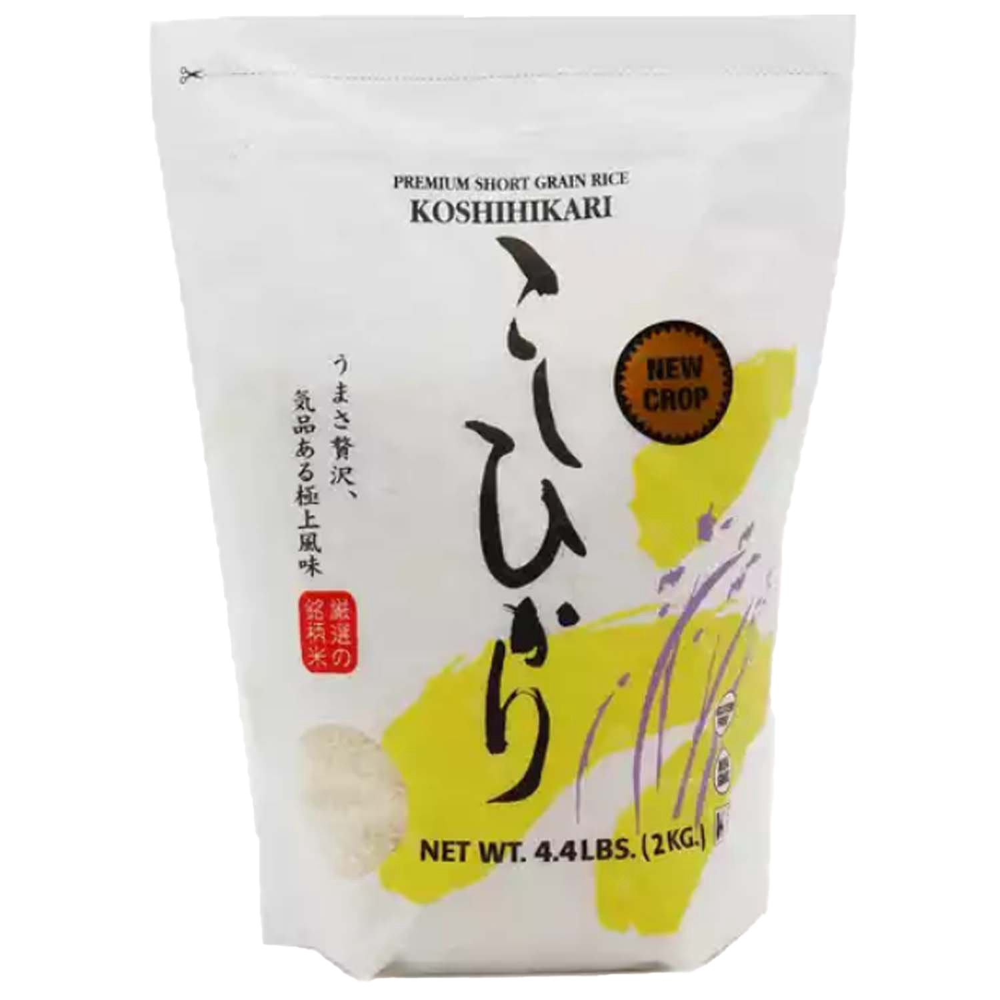
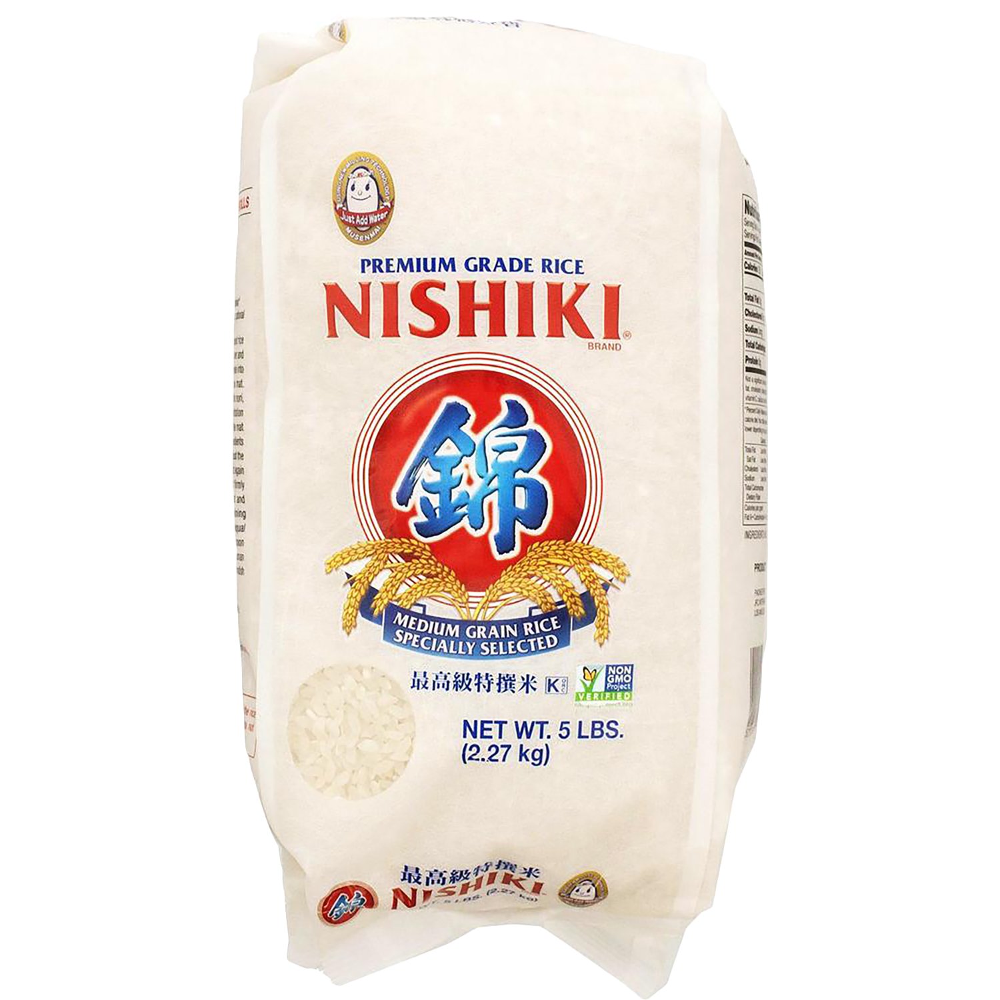
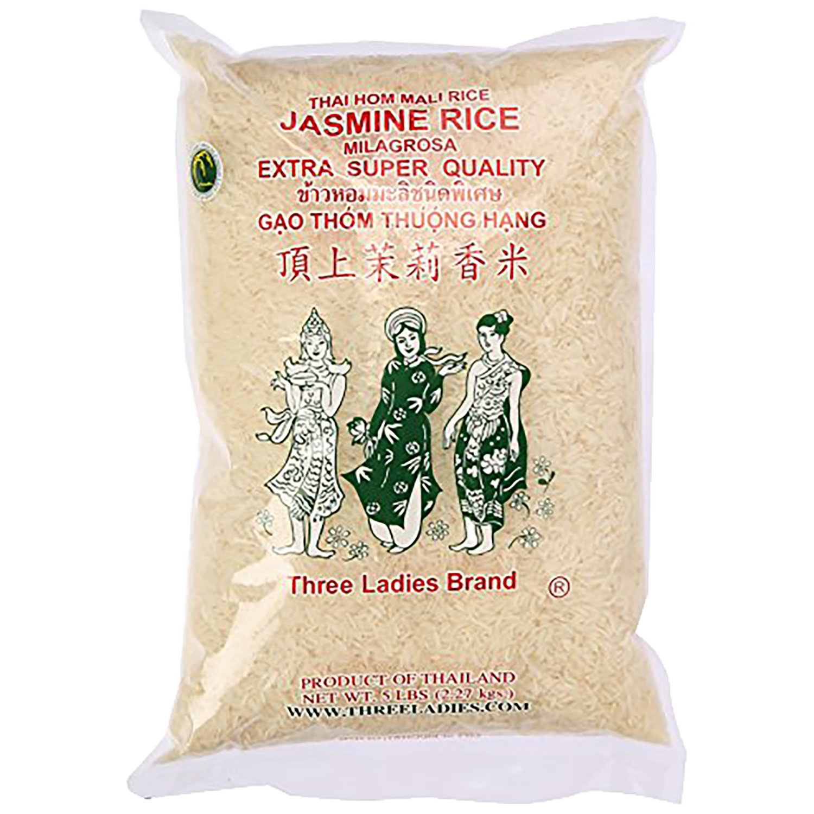

short grain rice
Most common variety is Japanese glutinous rice. It is more sticky because of it's higher strach content. Good for sushi or rice bowls.

medium grain rice
Cooks up tender and moist. Multipurpose use, when in doubt just get medium grain

long grain rice
Light and fluffy. Seperates as it cooks and doesn’t bind together much. More common in south-east asian and south asian countried. For example jasmine and basmati.